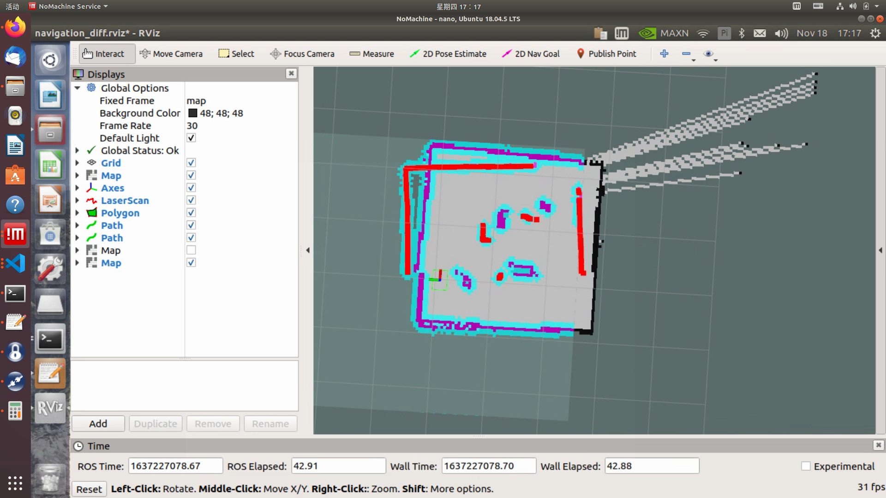
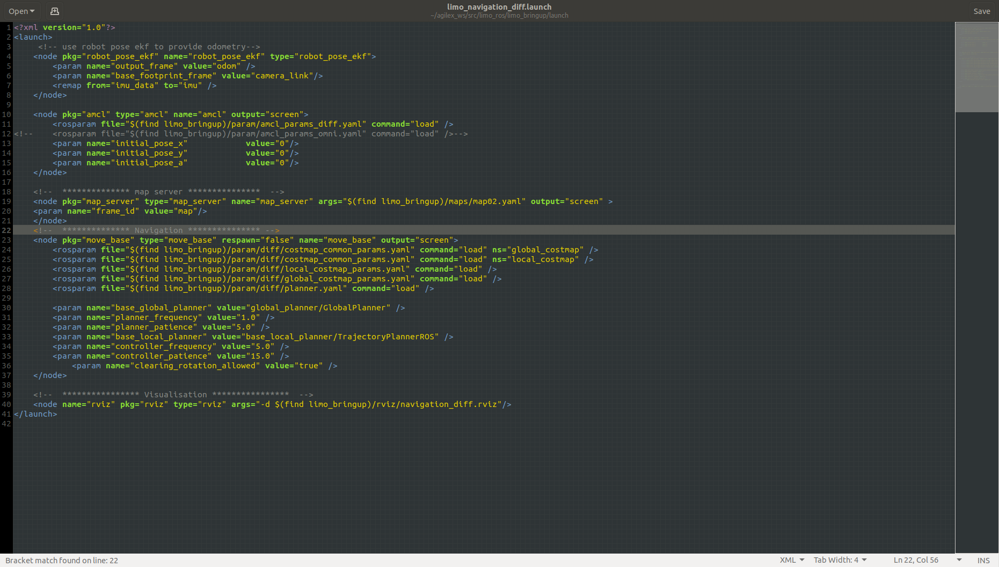

Navigation using the move_base and amcl packages
Overview
The move_base package provides an implementation of an action that, given a goal in the world, will attempt to reach it with a mobile base. The move_base node links together a global and local planner to accomplish its global navigation task. The move_base node also maintains two costmaps, one for the global planner, and one for a local planner (see the costmap_2d package) that are used to accomplish navigation tasks.
You can find more information on the move_base ROS Wiki page.
Usage
Note
In the differential, Mecanum mode, and tracked modes, the launch file for navigation is the same.
Note
Use Ctrl + C command to end all the processes before running the below commands.
Start the LIMO. Open a new terminal, and enter the command:
$ roslaunch limo_bringup limo_start.launch pub_odom_tf:=false
Launch the navigation function. Open a new terminal, and enter the command:
$ roslaunch limo_bringup limo_navigation_diff.launch
Note
If it is Ackermann motion mode, please run
$ roslaunch limo_bringup limo_navigation_ackerman.launch
After launching successfully, RViz will be opened and display something like the image below.
Note
To select the map to be loaded, open the limo_navigation_diff.launch file and change the args for the map_server node to the filepath of the map you wish to load. In the image below, this can be changed on line 19.
<node pkg="map_server" type="map_server" name="map_server" args="$(find limo_bringup)/maps/map02.yaml" output="screen"> <!-- ^^^^^^^^^^^^^^^^^^^^^^^^^^^^^^^^^^^^ -->
After launching the navigation, you will see that the laser scan display does not quite overlap with the map, meaning that the robot does not have a good estimate of where it is. To correct this, use the 2D Pose Estimate tool in RViz to publish an approximate position of the robot. When the laser scan overlaps the map, the correction is complete.

Now that we have an accurate estimate of the location of the robot, we can command navigation goals to it. To do this, use the 2D Nav Goal tool in RViz to select a point on the map you want the LIMO to navigate to.
A purple path will be displayed in the map indicating the planned path, and the robot will automatically navigate to the goal.
Configuration
AMCL
The parameter configuration files of the amcl package are: amcl_param_diff.yaml (the file is the amcl parameter file used in the four-wheel differential, omnidirectional wheel, and track motion modes), and amcl_param.yaml (the file is the amcl parameter file used in the Ackermann motion mode) .
| Parameter | Type | Default | Description |
|---|---|---|---|
| min_particles | int | 100 | The minimum number of particles allowed. |
| max_particles | int | 5000 | The maximum number of particles allowed. |
| kld_err | double | 0.01 | The maximum error between the true distribution and the estimated distribution. |
| kld_z | double | 0.99 | The upper normal quantile of (1-p), where p is the probability that the error on the estimated detuning will be less than kld_err. |
| update_min_d | double | 0.2m | A translation movement needs to be performed before performing the filter update. |
| update_min_a | double | π/ 6.0 radians | A rotation movement needs to be performed before performing the filter update. |
| resample_interval | int | 2 | The number of filter updates required before resampling. |
| transform_tolerance | double | 0 | The time at which the published transformation will be post-processed to indicate that the transformation will be effective in the future. |
| recovery_alpha_slow | double | 0 | The exponential decay rate of the slow average weight filter is used to decide when to recover by adding random poses. A good value may be 0.001. |
| recovery_alpha_fast | double | 0.0m | The exponential decay rate of the fast average weight filter is used to decide when to recover by adding random poses. A good value may be 0.1. |
| initial_pose_x | double | 0.0m | The initial pose average (x), used to initialize the filter with Gaussian distribution. |
| initial_pose_y | double | 0.0rad | The initial pose average (y), used to initialize the filter with Gaussian distribution. |
| initial_pose_a | double | 0.5 * 0.5m | The initial pose average (yaw), used to initialize the filter with Gaussian distribution. |
| initial_cov_xx | double | 0.5 * 0.5m | The initial pose covariance (x * x), used to initialize the filter with Gaussian distribution. |
| initial_cov_yy | double | -1.0 Hz | The initial pose covariance (y * y), used to initialize the filter with Gaussian distribution. |
| initial_cov_aa | double | 0.5 Hz | The initial pose covariance (yaw * yaw), used to initialize the filter with Gaussian distribution. |
| gui_publish_rate | double | FALSE | The maximum rate (Hz) of publishing visual scans and paths. -1.0 is disabled. |
| save_pose_rate | double | FALSE | Store the maximum rate (Hz) of the last estimated pose and covariance of the parameter server in the variables ~initial_pose_ and ~initial_cov_. This saved pose will be used in subsequent runs to initialize the filter. -1.0 is disabled. |
| use_map_topic | bool | -1 | When set to be true, AMCL will subscribe to the map topic instead of making a service call to receive its map. |
| first_map_only | bool | -1 | When set to be true, AMCL will only use the first mapping it subscribes to instead of updating each time a new mapping is received. |
DWA
The configuration parameter file of DWA is
~/agilex_ws/src/limo_ros/limo_bringup/param/diff/planner.yaml.
| Parameter | Type | Default | Description |
|---|---|---|---|
| acc_lim_x | double | 2.5 | Robot’s x acceleration limit (m/s2) |
| acc_lim_y | double | 2.5 | Robot’s y acceleration limit (m/s2) |
| acc_lim_th | double | 3.2 | Robot’s rotational acceleration limit (m/s2) |
| max_vel_trans | double | 0.55 | The absolute value of the maximum translational velocity of the robot (m/s). |
| min_vel_trans | double | 0.1 | The absolute value of the minimum translational velocity of the robot (m/s). |
| max_vel_x | double | 0.55 | Robot’s maximum x velocity (m/s) |
| min_vel_x | double | 0.0 | Robot’s minimum x velocity (m/s), negative when moving in reverse |
| max_vel_y | double | 0.1 | Robot’s maximum y velocity (m/s) |
| min_vel_y | double | -0.1 | Robot’s minimum y velocity (m/s) |
| max_rot_vel | double | 1.0 | The absolute value of the maximum rotation velocity of the robot (rad/s) |
| min_rot_vel | double | 0.4 | The absolute value of the minimum rotation velocity of the robot (rad/s) |
| yaw_goal_tolerance | double | 0.05 | The radian tolerance of the yaw/rotation when the controller achieves its goal |
| xy_goal_tolerance | double | 0.10 | The tolerance of the controller in the distance between x and y when achieving the goal (m/s) |
| latch_xy_goal_tolerance | bool | false | If the goal tolerance is locked, when the robot reaches the goal xy position, it will simply rotate into position, even if it eventually exceeds the goal tolerance while doing so. |
| sim_time | double | 1.7 | Time to simulate the trajectory forward in seconds |
| sim_granularity | double | 0.025 | Step taken between points on a given trajectory (m/s) |
| vx_samples | int | 3 | The number of samples used when exploring the x velocity space |
| vy_samples | int | 10 | The number of samples used when exploring the y velocity space |
| vth_samples | int | 20 | The number of samples used when exploring the theta velocity space |
| controller_frequency | double | 20.0 | Call the controller’s frequency. If it is not set in the controller’s namespace, use searchParam to read the parameters from the parent namespace. Use together with move_base, which means you only need to set its “controller_frequency” parameter and you can safely not set this parameter. |
| path_distance_bias | double | 32.0 | The weight that how close the controller should be to the given path |
| goal_distance_bias | double | 24.0 | The weight that the controller should try to reach its local goal and it should also control the velocity |
| occdist_scale | double | 0.01 | The weight that the controller should try to avoid obstacles |
| forward_point_distance | double | 0.325 | The distance from the center of the robot to the additional scoring point, in meters |
| stop_time_buffer | double | 0.2 | The amount of time the robot must stop before colliding for the trajectory to be valid, in seconds |
| scaling_speed | double | 0.25 | The absolute value of the speed at which the robot’s footprint is scaled (m/s) |
| max_scaling_factor | double | 0.2 | The biggest factor in scaling a robot’s footprint |
| publish_cost_grid | bool | false | Whether the cost grid that the planner will use when planning will be published? When it’s true, sensor_msgs/PointCloud2 will be available on the ~/cost_cloud topic. Each point cloud represents a cost grid and has a field for each individual scoring function component and the total cost of each cell, taking the scoring parameters into account. |
| oscillation_reset_dist | double | 0.05 | How far the robot must move in meters before resetting the oscillation tag |
| prune_plan | bool | true | Define whether the robot will eat the plan when moving along the path. If it’s set to be true, the points will fall from the end of the plan as soon as the robots move more than 1 meter. |
TEB
The parameter configuration file of TEB is:
~/agilex_ws/src/limo_ros/limo_bringup/param/carlike2/teb_local_planner_params.yaml.
| Parameter | Type | Default | Description |
|---|---|---|---|
| acc_lim_x | double | 0.5 | Robot’s maximum translational acceleration (m/s ^2) |
| acc_lim_theta | double | 0.5 | Robot’s maximum angular acceleration (radian/s ^2) |
| max_vel_x | double | 0.4 | Robot’s maximum translational velocity (m/s) |
| max_vel_x_backwards | double | 0.2 | The maximum absolute translational velocity (in m/s) when the robot is traveling backwards. |
| max_vel_theta | double | 0.3 | Robot’s maximum angular velocity (radian/s) |
| min_turning_radius | double | 0.0 | Automotive robot’s minimum turning radius (set to be zero for differential drive robots). |
| wheelbase | double | 1.0 | The distance between the rear axle and the front axle. For rear-wheel robots, this value may be negative (only required when cmd_angle_instead_rotvel is set to be true). |
| cmd_angle_instead_rotvel | bool | false | Replace the rotation velocity in the command velocity message with the corresponding steering angle [-pi/2, pi/2]. Note that it is not advisable to change the semantics of the yaw rate according to the application. Here, it is only the input required by the stage simulator.The data type in ackermann_msgs is more appropriate, but move_base does not support it. The local planner itself does not intend to send commands. |
| max_vel_y | double | 0.0 | Robot’s maximum sweep velocity (it should be zero for incomplete robots!) |
| acc_lim_y | double | 0.5 | Robot’s maximum sweep acceleration |
| footprint_model/type | double | point | Specify the type of robot footprint model used for optimization. The different types are “point”, “circle”, “line”, “two_circles” and “polygon”. The type of model can significantly affect the required calculation time. |
| footprint_model/radius | double | 0.2 | This parameter is only related to the “circle” type. It contains the radius of the circle. The center of the circle is on the rotation axis of the robot. |
| footprint_model/line_start | double | [-0.3, 0.0] | This parameter is only related to the “line” type. It contains the starting coordinates of the line segment. |
| footprint_model/line_end | double | [0.3, 0.0] | This parameter is only related to the “line” type. It contains the ending coordinates of the line segment. |
| footprint_model/front_offset | double | 0.2 | This parameter is only related to the “two_circles” type. It describes how much the center of the front circle has moved along the x-axis of the robot. Assume that the rotation axis of the robot is located at [0,0]. |
| footprint_model/front_radius | double | 0.2 | This parameter is only related to the “two_circles” type. It contains the radius of the front circle. |
| footprint_model/rear_offset | double | 0.2 | This parameter is only related to the “two_circles” type. It describes how much the center of the back circle has moved along the negative x-axis of the robot. Assume that the rotation axis of the robot is located at [0,0]. |
| footprint_model/rear_radius | double | 0.2 | This parameter is only related to the “two_circles” type. It contains the radius of the back circle. |
| footprint_model/vertices | double | [0.25,-0.05] | This parameter is only related to the “polygon” type. It contains a list of polygon vertices (each is a two-dimensional coordinate). Polygons are always closed: do not repeat the first vertex at the end. |
| is_footprint_dynamic | bool | false | If it’s true, the footprint is updated before checking the trajectory’s feasibility. |
| xy_goal_tolerance | double | 0.2 | Allowable final Euclidean distance to the goal position (in meters). |
| yaw_goal_tolerance | double | 0.2 | Allowable final direction error (in radians). |
| free_goal_vel | bool | false | Remove the goal velocity constraint, so that the robot can reach the goal at the maximum velocity. |
| dt_ref | double | 0.3 | The required time resolution of the trajectory (the trajectory is not fixed to dt_ref, because the time resolution is part of the optimization, but if dt_ref +-dt_hysteresis is violated, the trajectory size will be adjusted between iterations. |
| dt_hysteresis | double | 0.1 | The lag that is automatically resized according to the current time resolution, usually about 10% of the recommended dt_ref. |
| min_samples | int | 3 | Minimum number of samples (should always be greater than 2). |
| global_plan_overwrite_orientation | bool | true | Override the direction of the local sub-goals provided by the global planner (because they usually only provide a two-dimensional path). |
| global_plan_viapoint_sep | double | -0.1 (disabled)) | If it is positive, the via points are extracted from the global plan (path following mode). This value determines the resolution of the reference path (the minimum period between every two consecutive via points along the global plane, if it is negative. |
| max_global_plan_lookahead_dist | double | 3.0 | Specify the maximum length (cumulative Euclidean distance) of the subset of the global plan considered for optimization. The actual length is determined by the logical combination of the size of the local cost map and this maximum limit. Set to be zero or a negative number to deactivate this limit. |
| force_reinit_new_goal_dist | double | 1.0 | If the previous goal update period is greater than the specified value (in meters), re-initialize the trajectory (skip hot start). |
| feasibility_check_no_poses | bool | 4 | Specify that the feasibility of the pose on the prediction plan should be checked during each sampling period. |
| publish_feedback | bool | false | Publish planner feedback with complete trajectory and active obstacle list (it should only be enabled for evaluation or debugging). See the publisher list above. |
| shrink_horizon_backup | bool | true | Allow the planner to temporarily shrink the scope (50%) in the event that a problem (such as infeasibility) is automatically detected. See also parameter shrink_horizon_min_duration. |
| allow_init_with_backwards_motion | bool | false | If it’s true, the base trajectory may be initialized with backward motion in case the goal is behind the starting point in the local cost map (this is only recommended if the robot is equipped with a rear sensor). |
| exact_arc_length | double | false | If it’s true, the planner uses the precise arc length (-> increased CPU time) in the calculation of velocity, acceleration and turn rate, otherwise it uses the Euclidean approximation. |
| shrink_horizon_min_duration | double | 10.0 | If an infeasible trajectory is detected, please specify the shortest duration for shrinking the horizon (see the parameter shrink_horizon_backup to activate the shrink horizon mode). |
| min_obstacle_dist | double | 0.5 | The minimum expected distance to the obstacle (in meters). |
| include_costmap_obstacles | double | true | Specify whether or not the obstacles of the local cost map should be considered. Each cell marked as an obstacle is treated as a point obstacle. Therefore, do not choose a very small cost map resolution, because it will increase the calculation time. In future versions, this situation will be resolved and additional api will be provided for dynamic obstacles. |
| costmap_obstacles_behind_robot_dist | bool | 1.0 | Limit the occupied local cost map obstacles that are taken into account when planning behind the robot (specify the distance in meters) . |
| obstacle_poses_affected | double | 30 | Each obstacle position is attached to the nearest pose on the trajectory to maintain the distance. You can also consider additional neighbors. Please note that this parameter may be removed in a future version because the obstacle association strategy has been modified in kinetic+. Refer to the parameter description of legacy_obstacle_association. |
| inflation_dist | double | pre kinetic | Buffer around obstacles with non-zero penalty cost (should be greater than min_obstacle_dist to take effect). Refer weight_inflation. |
| include_dynamic_obstacles | string | false | If this parameter is set to be true, the motion of obstacles with non-zero velocity will be predicted and considered through the constant velocity model during the optimization process (provided through user-provided obstacles or obtained from the costmap_converter). New |
| legacy_obstacle_association | bool | false | The strategy for connecting trajectory poses and optimizing obstacles has been revised (see change log). You can switch to the old/previous strategy by setting this parameter to be true. Old strategy. |
| obstacle_association_force_inclusion_factor | double | 1.5 | The non-legacy obstacle association strategy tries to connect only the relevant obstacles with the discretized trajectory in the optimization process. But all obstacles within the specified distance are forcibly included (as a multiple of min_obstacle_dist). For example, choose 2.0 to force the consideration of obstacles within a radius of 2.0*min_obstacle_dist. [This parameter is used only when the parameter legacy_obstacle_association is false] |
| obstacle_association_cutoff_factor | int | 5 | See obstacle_association_force_inclusion_factor, but all obstacles that exceed the multiple of [value] * min_obstacle_dist are ignored in the optimization process. The parameter obstacle _association_force_inclusion_factor is processed first. [This parameter is used only when the parameter legacy_obstacle_association is false] |
| costmap_converter_plugin | int | “” | Define the plug-in name to convert cost map cells to points/lines/polygons. Set an empty string to disable conversion so that all cells are treated as point obstacles. |
| costmap_converter_spin_thread | double | true | If set to be true, the cost map converter calls its callback queue in a different thread. |
| costmap_converter_rate | double | 5.0 | Rate defines the frequency that the costmap_converter plugin processes the current cost map(This value should not be higher than the cost map update rate) [in Hertz]. |
| no_inner_iterations | double | 5 | The actual number of solver iterations called in each outer loop iteration. See parameter no_outer_iterations. |
| no_outer_iterations | double | 4 | Each outer loop iteration will automatically adjust the trajectory size and call the internal optimizer (execute no_inner_iterations) according to the required time resolution dt_ref. Therefore, the total number of solver iterations in each planning cycle is the product of the two values. |
| penalty_epsilon | double | 0.1 | Add a small safety margin to the penalty function of the hard constraint approximation. |
| weight_max_vel_x | double | 2.0 | Optimized weight to meet the maximum allowable translational velocity. |
| weight_max_vel_theta | double | 1.0 | Optimized weight to meet the maximum allowable angular velocity. |
| weight_acc_lim_x | double | 1.0 | Optimized weight to meet the maximum allowable translational acceleration. |
| weight_acc_lim_theta | double | 1.0 | Optimized weight to meet the maximum allowable angular acceleration. |
| weight_kinematics_nh | double | 1000.0 | The optimized weight used to meet non-holonomic kinematics (this parameter must be very high, because the kinematics equation constitutes an equality constraint, and the “original” cost value is small compared with other costs, so even a value of 1000 does not mean the matrix condition is not good). |
| weight_kinematics_forward_drive | double | 1.0 | The optimized weight to force the robot to select only the forward direction (positive translational velocity). The small weight (eg. 1.0) still allows driving backwards. A value around 1000 can almost prevent backward driving (but it cannot be guaranteed). |
| weight_kinematics_turning_radius | double | 1.0 | The optimized weight to force the minimum turning radius (only for automobile robots). |
| weight_optimaltime | double | 1.0 | Optimized weight to shorten trajectory wrt conversion/execution time. |
| weight_obstacle | bool | 50.0 | Optimized weight to keep the minimum distance from the obstacle. |
| weight_viapoint | bool | 1.0 | The optimized weight (corresponding reference path) used to minimize the distance to the passing point. 0.4 new version. |
| weight_inflation | int | 0.1 | The optimized weight of the inflation penalty (should be small). |
| weight_adapt_factor | double | 2.0 | In each outer TEB iteration (weight_new = weight_old*factor), some special weights (currently weight_obstacle) are repeatedly scaled by this factor. Iteratively increasing the weights instead of setting a huge prior value will lead to better numerical conditions for the basic optimization problem. |
| enable_homotopy_class_planning | double | true | Activate parallel planning in different topologies (requires more CPU resources because multiple trajectories are optimized at once). |
| enable_multithreading | double | true | Activate multiple threads to plan each trajectory in different threads. |
| max_number_classes | bool | 4 | Specify the maximum number of different trajectories to be considered (limits the computational effort). |
| selection_cost_hysteresis | int | 1.0 | Specify how much trajectory cost the new candidate must have compared to the previously selected trajectory to be selected (select if new_cost <old_cost*factor). |
| selection_obst_cost_scale | double | 100.0 | Additional scaling of the obstacle cost term used only to select the “best” candidate. |
| selection_viapoint_cost_scale | double | 1.0 | The additional scaling used only to select the “best” candidate through the point cost clause. 0.4 new version. |
| selection_alternative_time_cost | double | false | If it’s true, the time cost (sum of squares of the time difference) will be replaced with the total conversion time (sum of the time difference). |
| roadmap_graph_no_samples | double | 15 | Specify the number of samples generated to create the roadmap. |
| roadmap_graph_area_width | bool | 6 | Sample the random keypoints/waypoints in the rectangular area between the starting point and the goal. Specify the width of the area in meters. |
| h_signature_prescaler | bool | 1.0 | The internal parameter (H-signature) of the ratio used to distinguish homotopy classes. Warn |
| h_signature_threshold | double | 0.1 | If the differences between the real part and the complex part are lower than the specified threshold, it is assumed that the two H signatures are equal. |
| obstacle_heading_threshold | string | 1.0 | Specify the value of the scalar product between the obstacle course and the goal course so that they (obstacles) are taken into account when exploring. |
| visualize_hc_graph | string | false | Visualize the graph created to explore the unique trajectory (check the tag message in rviz). |
| viapoints_all_candidates | bool | true | If it’s true, all trajectories of different topologies are attached to a set of via points, otherwise only trajectories that share the same topology with the initial/global plan are connected to them (no effect on test_optim_node). 0.4 new version |
| switching_blocking_period | double | 0.0 | Specify the duration (in seconds) that needs to expire before being allowed to switch to the new equivalence class. |
| odom_topic | double | odom | The subject name of the odometer message, provided by the robot driver or simulator. |
| map_frame | bool | odom | Global planning framework (if it is a static map, this parameter usually must be changed to “/map”. |